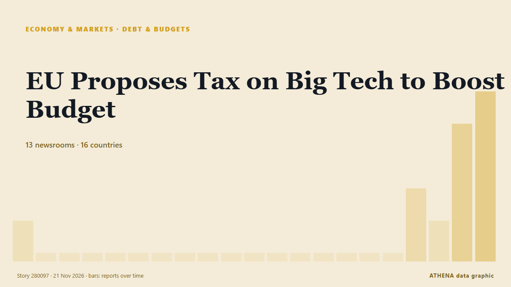

ATHENA Glaux Intelligence — Παγκόσμια ειδησεογραφική ανάλυση — κάθε αριθμός εξηγημένος
Κάθε είδηση, ελεγμένη σε πολλές χώρες.
Το ATHENA Glaux παρακολουθεί 635 ειδησεογραφικά μέσα σε όλο τον κόσμο. Μια είδηση γίνεται επαληθευμένο γεγονός μόνο όταν την αναφέρουν ανεξάρτητα μέσα. Κάθε γεγονός δείχνει ποιος το ανέφερε πρώτος και έναν βαθμό κινδύνου με τους λόγους του.
Σεισμός ή πλημμύρα κοντά σας αυτή την εβδομάδα;
Γράψτε την πόλη σας και δείτε σεισμούς, πλημμύρες, καταιγίδες και επίσημες προειδοποιήσεις κοντά της, με λίστα κιτ έκτακτης ανάγκης 72 ωρών. Δωρεάν, χωρίς εγγραφή, και η περιοχή σας μένει στη συσκευή σας.
Αναφορές έρχονται από ανεξάρτητα μέσα — όταν δύο συναντηθούν στην ίδια ιστορία, γίνεται επιβεβαιωμένο γεγονός.
Πώς ελέγχει το ATHENA μια είδηση
- ΣυλλογήΟι αναφορές φτάνουν από ανεξάρτητα μέσα σε πολλές χώρες.
- ΑντιστοίχισηΌταν δύο μέσα συναντιούνται στην ίδια είδηση, γίνεται επαληθευμένο γεγονός.
- ΕξήγησηΚάθε γεγονός δείχνει ποιος ήταν πρώτος, πόσο εξαπλώθηκε και γιατί ο κίνδυνος είναι αυτός.

Οικονομία & ΑγορέςEU Proposes Tax on Big Tech to Boost Budget
EU nations clash over 2028-34 budget, with Germany pushing for cuts to the proposed €2 trillion plan. από Express Tribune
Οι τίτλοι των ειδήσεων παρουσιάζονται στα αγγλικά, όπως δημοσιεύτηκαν.
Trump defends Putin after trilateral with Xi
President Trump, China's Xi Jinping and Russia's Vladimir Putin appeared to make little progress in their trilateral meeting in Shenzhen, China. από CBS News (World)
UN Moves to Regulate Killer Robots
Countries move towards regulating killer robots by 2028, but no binding treaty has been secured. από News of Bahrain

Πλοία στα θαλάσσια περάσματα τώρα
Ζωντανές μετρήσεις AIS. Πατήστε ή περάστε πάνω από μια μπάρα για λεπτομέρειες.
Zelensky says Crimean Bridge strikes ‘fair response’ as he meets UK’s Streeting
Ukraine's president says Kyiv acted after 109 separate Russian aerial attacks on bridges in Ukraine. από BBC News
Trump threatens to tax US firms that build data centres abroad
WASHINGTON: President Donald Trump threatened on Friday to impose a steep tax on US companies that build data centres overseas. από New Straits Times
Fossil fuel row stalls COP31 climate deal
Its applications now extend well beyond hessian and sacks to biodegradable shopping bags, geotextiles for erosion control and coastal protection, automotive composites, and advanced materials such as… από The Business Standard (Bangladesh) (working feed)
Γεωπολιτική, Πολιτική & Ασφάλεια
Περισσότερα ›Eisenkot invites Netanyahu's party to coalition talks
Gadi Eisenkot, who is tasked with forming the next Israeli government, has invited the right-wing Likud party of Caretaker Prime Minister Benjamin Netanyahu to coalition talks, his party has said. από RTÉ News
- Πόλεμοι & συγκρούσεις
Saudi-Led Coalition Says Downed 3 Houthi Missiles Headed For Riyadh
- Πόλεμοι & συγκρούσεις
Iraqi forces strike compromise with powerful pro-Iran militia, security officials say
- Διπλωματία & σύνοδοι
South Africa hit back against Ireland in thrilling Dublin test
- Εκλογές & πολιτική
With US midterms underway, courts rebuff Trump's pressure on state election officials
Οικονομία, Χρηματοοικονομικά & Αγορές
Περισσότερα ›- Χρέος & προϋπολογισμοί
EU leaders’ chair pushes budget cuts, suggests digital tax
- Μετοχές & κινήσεις αγορών
UK braced as temperatures could drop to minus 10C in coldest night of autumn
- Απασχόληση & μισθοί
Boeing Weighs More Layoffs As 737 MAX Output Boost Slows
- Μετοχές, ομόλογα & αγορές
SK Hynix to become Kioxia's top shareholder with bond conversion
Εμπόριο, Βιομηχανία & Υποδομές
Περισσότερα ›EU and Indonesia officially sign ‘ambitious’ trade deal
The agreement includes a dedicated protocol on palm oil. από Euractiv
- Αερομεταφορές, σιδηρόδρομος & οδικές
Belgium faces air traffic shutdown due to national strike Monday
- Κατασκευές & υποδομές
Russia details Kerch Bridge damage, weighs two repair plans
- Γεωργία & επισιτιστική ασφάλεια
Afghan Tradition Keeps Grapes Fresh for Winter Treat
- Ναυτιλία & λιμάνια
Piraeus tanker hits moored tug after refuelling cruise ship, captain arrested
Ενέργεια, Πόροι & Περιβάλλον
Περισσότερα ›Nepal flood victims' families may wait up to a year for death certificates
KUALA LUMPUR: Families of Malaysians missing in the Nepal floods could face another three to 12 months, or longer, to obtain certificates of presumption of death, Malaysia Solidarity Families in Hope… από New Straits Times
- Πετρέλαιο & φυσικό αέριο
Oil prices exceed $92 on global commodity markets
- Ρύπανση & βιοποικιλότητα
Briton swims in Strait of Hormuz to highlight ‘environmental cost of war’
- Ρύπανση & βιοποικιλότητα
Port of Los Angeles Releases Environmental Impact Draft for Proposed Terminal Improvements
- Κρίσιμες πρώτες ύλες
What US mining firm plans to do before mining Kenya’s Ksh8T Mrima Hill minerals
Τεχνολογία, ΤΝ & Κυβερνοασφάλεια
Περισσότερα ›Mysterious Mercury is about to get a visitor - after spacecraft's eight-year epic voyage
The mission is set to give us our best ever view of Mercury - the closest planet to the Sun. από BBC News
- Επεξεργαστές & υπολογιστική
Trump's administration is sending mixed signals on chips, China and AI
- Τεχνητή νοημοσύνη
Signal restricts screenshots to block AI agents from reading messages
- Τεχνητή νοημοσύνη
Anthropic mathematician claims Claude helped prove the Riemann Hypothesis
- Τεχνητή νοημοσύνη
Many Etsy Sellers Close Up Shop Over Site’s New A.I. Policy
Επιχειρήσεις, Εταιρείες & Επενδύσεις
Περισσότερα ›Mohamad meets BN, PN reps to resolve MB-related issues
Barisan Nasional deputy chairman Mohamad Hasan also says any matter concerning the state administration must be carried out in accordance with its constitution and rule of law. από Free Malaysia Today
- Επιχειρηματικά κεφάλαια
Motsepe leads CAF delegation to Nigeria for General Assembly
- Συγχωνεύσεις & εξαγορές
Karnataka to make fresh bid for ST status for Kadugolla and Hattigolla communities
- Εταιρική στρατηγική
Russia's Wildberries CEO Steps Down Days After EU Sanctions, Media Report
- Εταιρική στρατηγική
‘GTA 6’ Hits Massive $3.79 Billion in First-Day Sales
Δυστυχήματα & έκτακτες ανάγκες
Περισσότερα ›Bahrain says Iranian attack hits industrial facility, causes fire
Bahrain, which hosts the U.S. Navy's Fifth Fleet, says it has intercepted several Iranian aerial attacks over the past week. από Haaretz (English)
- Δυστυχήματα & έκτακτες ανάγκες
24 dead in Nigeria when boat capsizes while carrying people to a funeral
- Δυστυχήματα & έκτακτες ανάγκες
Titanic survivor’s diamond ring sells for £150,000 at auction
- Δυστυχήματα & έκτακτες ανάγκες
Tinubu Mourns Bayelsa Boat Victims, Orders Rescue Agencies To Recover Bodies
- Δυστυχήματα & έκτακτες ανάγκες
As e-bike battery fires mount, New York weighs tougher restrictions
Τρεις τρόποι να διαβάσετε σήμερα
Ξεκινήστε από αυτόν που ταιριάζει στον χρόνο σαςΕπαληθευμένα γεγονότα
Κατά σειρά έκτασης της κάλυψης
- Russian cargo vessel linked to defence ministry comes under drone attack near Finland134 μέσα · 48 χώρεςΚίνδυνος 5.7
- Trump says Jensen Huang should apologize and return to Nvidia146 μέσα · 47 χώρεςΚίνδυνος 4.4
- Russian cargo ship burns in Baltic Sea after drone strike100 μέσα · 46 χώρεςΚίνδυνος 6.0
- Tankers hit in Strait of Hormuz as Iran tightens grip on shipping83 μέσα · 32 χώρεςΚίνδυνος 5.2
- Κίνδυνος 5.8
Γραφείο Ανάλυσης
Κάντε μια ερώτηση και διαβάστε τεκμηριωμένη αξιολόγηση μιας βασικής είδησης, μαζί με το τι θα την διέψευδε.
Ανοίξτε το Γραφείο Ανάλυσης ›Η σημερινή εικόνα
| 03:00 | 0 |
|---|---|
| 04:00 | 0 |
| 05:00 | 0 |
| 06:00 | 0 |
| 07:00 | 0 |
| 08:00 | 1296 |
| 09:00 | 780 |
| 10:00 | 982 |
| 11:00 | 907 |
| 12:00 | 725 |
| 13:00 | 576 |
| 14:00 | 410 |
| 15:00 | 362 |
| 16:00 | 446 |
| 17:00 | 356 |
| 18:00 | 447 |
| 19:00 | 392 |
| 20:00 | 210 |
| 21:00 | 362 |
| 22:00 | 304 |
| 23:00 | 198 |
| 00:00 | 333 |
| 01:00 | 189 |
| 02:00 | 336 |
Κίνδυνος των σημερινών γεγονότων
Αναδυόμενα σήματα
- Κίνδυνος σε άνοδο · Ενεργό τώρα24 dead in Nigeria when boat capsizes while carrying people to a funeral
- Νέο όνομα στις ειδήσεις · Ενεργό τώραEl Chapo Isidro
- Απότομη αύξηση · Ενεργό τώραGulf of Finland
- Νέο όνομα στις ειδήσεις · Ενεργό τώραFBI's
- Απότομη αύξηση · Ενεργό τώραIbadan
Επίσημες προειδοποιήσεις
- M 5.9 - 238 km SW of Yanglong, ChinaM5.9 · PAGER yellow · USGS ·
- Orange notification for tropical cyclone AKVAN-26. Population affected by Category 1 (120 km/h) wind speeds or higher is 0 (20.826 million in Tropical Storm).Orange · GDACS ·
Μείνετε ενημερωμένοι
ATHENA Weekly Risk Picture
Οι μεγαλύτεροι γεωπολιτικοί, οικονομικοί και ναυτιλιακοί κίνδυνοι της εβδομάδας, διασταυρωμένοι και βαθμολογημένοι.
Κάθε Παρασκευή στις 08:00 ώρα Ελλάδας · δωρεάν · στα αγγλικά
Δωρεάν εγγραφήΤο ATHENA στο Telegram
Οι ειδήσεις τη στιγμή που δημοσιεύονται: έκτακτα γεγονότα με κίνδυνο 6 ή περισσότερο, ωριαία σύνοψη, ενημερώσεις κινδύνου και η ημερήσια ενημέρωση στις 10:00.
Δωρεάν · αναρτήσεις στα αγγλικά · αποχωρείτε όποτε θέλετε
Είσοδος στο κανάλιΤην εγγραφή τη διαχειρίζεται η beehiiv με διπλή επιβεβαίωση: τίποτα από όσα πληκτρολογείτε δεν αποστέλλεται στο ATHENA, και κάθε τεύχος έχει σύνδεσμο διαγραφής.
Παρακολούθηση κινδύνων
Περισσότερα ›Παγκόσμιοι κίνδυνοι — εβδομάδα 47, 2026 (16–22 Νοε) ›